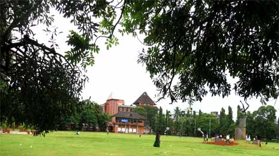
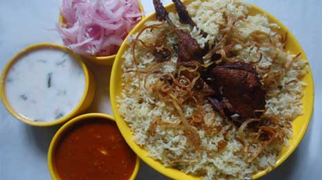
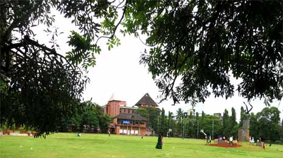
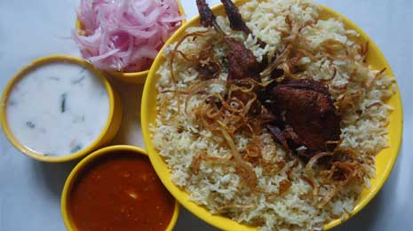

About Kozhikode
|
Kozhikode is a coastal city in the south Indian state of Kerala. It was a significant spice trade center and is close to Kappad Beach, where Portuguese explorer Vasco da Gama landed in 1498. The central Kozhikode Beach, overlooked by an old lighthouse, is a popular spot for watching the sunset. Inland, tree-lined Mananchira Square, with its musical fountain, surrounds the massive Mananchira Tank, an artificial pond. |
|---|
Kozhikode For You


 


